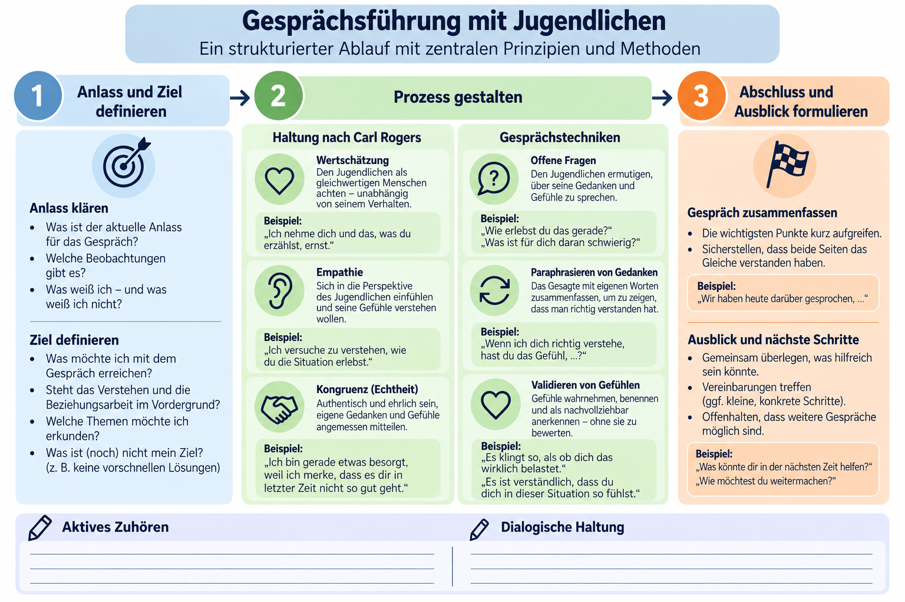

Auf den PunktFreiwilligkeit + Offenheit + Beteiligung machen die OKJA zu einem besonderen Lern- und Begegnungsort. Die Beziehung zu Fachkräften ermöglicht Orientierung, ohne jugendliche Selbstbestimmung zu ersetzen.
Die fünf handlungsleitenden Prinzipien
Offenheit
Keine Festlegung auf bestimmte Zielgruppen und vorgegebene Themen. Interessen und Anliegen der jungen Menschen bestimmen mit, was geschieht.
Freiwilligkeit
Teilnahme und Aktivitäten erfolgen grundsätzlich ohne Zwang. Gerade deshalb sind Kontakt, Motivation und tragfähige Beziehungen wesentlich.
Partizipation
Junge Menschen gestalten Regeln, Räume, Angebote und Entscheidungen mit – nicht nur durch unverbindliche Meinungsabfragen.
Lebenswelt- & Sozialraumorientierung
Ausgangspunkt sind tatsächliche Lebenslagen, Treffpunkte, Peers, Barrieren und Ressourcen vor Ort; der Stadtteil wird als Lebens- und Lernraum ernst genommen.
Geschlechtergerechtigkeit
Benachteiligungen und Rollenbilder reflektieren; Teilhabe unabhängig von Geschlecht, Lebenslage und Zuschreibungen ermöglichen.
Auftrag, Potenziale und Leistungen unterscheiden
PraxisfolgeEin Jugendhaus ist nicht einfach eine Schule am Nachmittag. Seine Stärke liegt auch darin, dass Jugendliche ohne Mitgliedschaft oder Leistungsvorgaben kommen und Beziehungen selbstbestimmt gestalten können. Schutzregeln und Verlässlichkeit bleiben dennoch notwendig.
02 Beziehungsarbeit
Professionelle Nähe bedeutet Zuwendung mit klaren Grenzen.
Beziehungsarbeit umfasst die bewusste Herstellung und Aufrechterhaltung persönlicher Kontakte. Sie entsteht nicht durch ein einmaliges Gespräch, sondern durch wiederholte Begegnungen und reflektiertes Handeln.
Auf den PunktVertrauen ist eine Arbeitsgrundlage, kein Selbstzweck. Es ermöglicht Offenheit und Entwicklung – zugleich muss die Fachkraft ihre Rolle, Macht und Verantwortung reflektieren.
Was tragfähige Beziehung ausmacht
Kontinuität und Verlässlichkeit
Zusage einhalten, ansprechbar bleiben, Grenzen erklären und auch nach Auseinandersetzungen den Kontakt nicht abbrechen.
Empathie und Wertschätzung
Die subjektive Perspektive ernst nehmen, ohne jedes Verhalten zu billigen. Kongruenz heißt dabei: glaubwürdig und stimmig auftreten.
Macht bewusst handhaben
Fachkräfte verfügen über Wissen, Regeln und institutionelle Handlungsmacht. Das begründet Verantwortung für Transparenz und Beteiligung, nicht Bevormundung.
Arbeitsbündnis
Gemeinsam ein sinnvolles Anliegen bearbeiten: Was möchte der Jugendliche, was ist fachlich möglich, und welche Grenzen gelten?
Containment: Halt geben, ohne alles selbst zu tragen
Schröder nutzt den Begriff Containment, um eine besondere Beziehungsaufgabe zu beschreiben: Fachkräfte können starke Gefühle, Unsicherheit oder Widersprüche Jugendlicher aufnehmen, verstehen und in bearbeitbarer Weise beantworten, statt impulsiv zurückzureagieren. Das ist keine Aufforderung, Gewalt hinzunehmen oder therapeutische Aufgaben ohne Zuständigkeit zu übernehmen.
Professionelle NäheInteresse, Berechenbarkeit, zuhören, Konflikte aushalten, Gesprächsbereitschaft und angemessene Selbstoffenbarung.
Problematische VerstrickungRetterrolle, private Abhängigkeit, Geheimhaltungsversprechen, Bevorzugung oder Reaktionen aus eigener Kränkung.
Reflexion und Supervision sind deshalb Qualitätsmerkmale: Eigene Erwartungen, diffuse und rollengebundene Beziehungsanteile sowie Machtasymmetrien werden geprüft. Beziehungen entstehen auch in gemeinsamer Tätigkeit und an sozialen Orten, nicht nur in Beratungsgesprächen.
PraxisfolgeEin Jugendlicher schreit die Fachkraft an. Statt zurückzuschreien oder sich vollständig zurückzuziehen, setzt sie eine klare Grenze, benennt die Spannung und bietet später ein Gespräch an. Die Beziehung bleibt grundsätzlich bestehen.
03 Entwicklung
Jugendliches Verhalten verstehen heißt: nach seiner möglichen Funktion fragen.
Jugendliche bewältigen körperliche, emotionale und soziale Veränderungen. Autonomie, Peers, Identität und Zukunftsorientierung gewinnen an Bedeutung. Verhalten kann auf Bedürfnisse reagieren – aber niemals eindeutig aus einem Modell abgelesen werden.
Auf den PunktDie vier psychischen Grundbedürfnisse nach Grawe, von Borg-Laufs auf das Jugendalter bezogen, sind ein Werkzeug für Arbeitshypothesen, keine Diagnosen.
01Orientierung & Kontrolle
Verstehen, was geschieht, und auf das eigene Leben Einfluss nehmen können.
Wenn belastet: Widerstand, Rückzug oder Kontrollkämpfe können auftreten.Folge: Schritte erklären, echte Wahlmöglichkeiten ermöglichen, Absprachen verlässlich einhalten.
02Selbstwertschutz & -erhöhung
Sich anerkannt, kompetent und als wertvoll erleben.
Wenn belastet: Beschämung, Aggression oder demonstrative Gleichgültigkeit sind mögliche Reaktionen.Folge: Ressourcen anerkennen; Handlungen kritisieren, nicht die Person abwerten.
03Lustgewinn & Unlustvermeidung
Angenehme Erfahrungen suchen, Schmerz und Belastung reduzieren.
Wenn belastet: Vermeidung oder kurzfristige, auch riskante Entlastungsstrategien sind denkbar.Folge: Entlastungsfunktion verstehen und weniger schädliche Alternativen entwickeln.
04Bindung
Zugehörigkeit und verlässliche emotionale Beziehungen erfahren.
Wenn belastet: Misstrauen, Klammern oder widersprüchliches Kontaktverhalten können entstehen.Folge: Kontinuität anbieten, tragende Peer- und Familienbeziehungen erkunden.
Entwicklungsaufgaben verändern die Bedeutung von Verhalten
Jugendliche lösen sich schrittweise von Erwachsenen, entwickeln eigene soziale Beziehungen, suchen Zugehörigkeit in Peergruppen und erproben Identität. Ein Konflikt mit Erwachsenen kann sowohl Autonomiestreben als auch Überforderung ausdrücken. Die Fachkraft betrachtet daher individuelle Geschichte, Ressourcen, Lebenswelt und aktuelle Situation gemeinsam.
PraxisfolgeEin Jugendlicher bleibt jeden Abend bis zur Schließung im Jugendhaus. Mögliche Hypothesen: Dort erlebt er Sicherheit, Anerkennung oder Abstand von Belastungen. Erst durch Nachfragen wird klar, was für ihn tatsächlich zutrifft.
04 Gespräch
Haltung entscheidet, ob Gesprächstechniken wirksam werden können.
Dialogische Haltung und aktives Zuhören gehören zusammen: Die Fachkraft will nicht nur Informationen sammeln, sondern die Perspektive des Jugendlichen verstehen und eine gemeinsame Bearbeitung ermöglichen.
Auf den PunktErkunden statt vorschnell deuten. Wertschätzung, Empathie und authentisches Auftreten schaffen einen Rahmen, in dem Jugendliche ihre Sicht ohne Beschämung einbringen können.
Haltung nach Rogers und im Dialog
Empathie
Gefühle und Sichtweise des Gegenübers nachvollziehen, ohne die eigene Perspektive mit seiner gleichzusetzen.
Wertschätzung / Akzeptanz
Die Person achten, auch wenn ihr konkretes Verhalten begrenzt oder kritisiert werden muss.
Kongruenz
Wahrhaftig und transparent sein; keine vorgetäuschten Gefühle oder uneinlösbare Versprechen.
Dialogische Haltung verlangt zusätzlich Selbstreflexion: Welche Vorannahmen bringe ich mit? Kann ich einen Perspektivwechsel zulassen? Respekt, Augenhöhe und Körpersprache gehören ebenso dazu wie das Gespräch selbst.
Aktives Zuhören konkret
Ein einfaches Gesprächsgerüst
01Anlass klärenZeit, freiwilligen Rahmen und Ziel absprechen.
02Gemeinsam verstehenOffen fragen, zuhören, Perspektiven und Optionen klären.
03Abschluss sichernErgebnisse, Beteiligung, nächste Schritte und Kontakt klären.
Störungen reduzieren, nonverbal zugewandt bleiben und Schweigen aushalten. Konflikt darf thematisiert werden, ohne den Jugendlichen abzuwerten. Bei Schutzfragen muss die Grenze der Vertraulichkeit rechtzeitig erklärt werden.
Gesprächsführung als Schaubild ansehen

PraxisfolgeStatt „Warum hast du schon wieder Ärger gemacht?“ besser: „Was war kurz vor dem Streit los? Was war dir wichtig? Was würde dir jetzt helfen?“ Die Fragehaltung eröffnet Handlungsmöglichkeiten.
05 Organisation
Eine gute Konzeption macht pädagogische Absichten im Alltag überprüfbar.
Konzeptentwicklung verbindet gesellschaftlichen Auftrag, Bedürfnisse vor Ort, fachliche Ziele und konkrete Praxis. Sie wird mit jungen Menschen gestaltet und immer wieder überprüft.
Auf den PunktBedarf verstehen → Ziele aushandeln → handeln → Wirkung prüfen → anpassen. Ein Konzept wird nicht dadurch gut, dass es alle Schlagwörter enthält, sondern wenn es die reale Praxis orientiert.
Konzept, Konzeption und Leitlinien
Die Fachliteratur verwendet „Konzept“ und „Konzeption“ nicht einheitlich. Diese Unterscheidung dient der Prüfungsklarheit, ist keine überall verbindliche Definition.
Vier formale Qualitätsstandards
Rechtlichen Auftrag konkretisieren
§ 11 SGB VIII und die Rechte junger Menschen auf die Situation der Einrichtung übertragen.
Bedarfsbezogene Ziele operationalisieren
Aus Lebenswelt- und Bedarfsanalyse überprüfbare Handlungsziele ableiten; angestrebte Wirkungen gesondert benennen und kritisch prüfen.
Partizipation ermöglichen
Jugendliche an Bedarfsklärung, Zielen, Entscheidungen und ihrer Überprüfung beteiligen.
Planen und reflektieren
Methoden, Zuständigkeiten und Ressourcen festlegen; Umsetzung auswerten und Ziele bei Bedarf korrigieren.
Fachliche Ausrichtung: Die Konzeption muss außerdem erkennbar machen, wie Beziehungsarbeit, Subjekt- und Bildungsorientierung sowie Sozialraum- und Aneignungsorientierung im Alltag umgesetzt werden. Standards beschreiben die Qualität des Vorgehens; die fachlichen Ansätze bestimmen dessen Inhalt.
01PlanenBedarf, Beteiligte und Ziele klären.
02UmsetzenMethoden und Angebote erproben.
03ÜberprüfenWirkung und Grenzen reflektieren.
04WeiterentwickelnÄnderungen verbindlich vereinbaren.
Outlaw: Wie Prinzipien zu konkreten Entscheidungen werden
Das Grundkonzept OKJA von Outlaw (2022) ist ein Praxisbeispiel: Offenheit, Niedrigschwelligkeit und Freiwilligkeit werden etwa durch einen offenen Treff ohne Anmeldung, möglichst kostenfreie Angebote, Barriereabbau und verständliche bzw. mehrsprachige Ansprache konkretisiert. Hinzu kommen Bildung und Lebensbewältigung, Inklusion sowie Sozialraum- und Lebensweltorientierung. Das Dokument zeigt eine konzeptionelle Absicht, nicht automatisch einen Nachweis ihrer Wirkung vor Ort.
Sucht und Gewalt: das Einrichtungskonzept im Alltag anwenden
Die PT2-Unterlage nennt Sucht- und Gewaltsituationen ausdrücklich als Anlass konzeptioneller Teamarbeit. Substanzkonsum ist nicht automatisch Abhängigkeit; ein Konflikt ist nicht automatisch Gewalt. Fachkräfte klären den Sachverhalt ohne Beschämung, setzen bei Übergriffen sichere Grenzen und berücksichtigen die Perspektiven der Jugendlichen.
01Beziehung & BeteiligungZuhören, Bedürfnisse und Risiken erkunden; Jugendliche in geeignete nächste Schritte einbeziehen.
02Schutz & RegelnGewalt unterbinden, Hausregeln transparent erklären; bei Gefahren zuständige Schutz- und Notfallwege nutzen.
03Team & NetzwerkZuständigkeiten, Beratung, Hilfekontakte und Reflexion in der Konzeption verankern.
PraxisfolgeDas Team schreibt nicht nur „Wir arbeiten partizipativ“, sondern bestimmt: Wer entscheidet über Öffnungszeiten und Hausregeln mit? Wie werden Vorschläge aufgenommen? Wann wird gemeinsam überprüft, was sich geändert hat?
06 Teilhabe & Wirkung
Beteiligung ist ein Recht und stärkt zugleich die Qualität der Beziehungen.
Prävention in der OKJA geschieht nicht nur durch besondere Programme, sondern auch im Alltag: durch verlässliche Kontakte, Mitsprache, niedrigschwellige Beratung und Räume, in denen Kritik geäußert werden kann.
Auf den PunktMitbestimmung muss Folgen haben. Wer bei Entscheidungen wirklich beteiligt ist, erlebt Selbstwirksamkeit. Prävention benötigt vertrauenswürdige Beziehungen und darf diese nicht durch permanente Kontrolle untergraben.
Von der Beteiligungsabsicht zur Beteiligungspraxis
Entscheidungsmacht teilen
Bei Angeboten, Räumen und Regeln echte Wahl- und Gestaltungsmöglichkeiten eröffnen; begründen, was nicht verhandelbar ist.
Beschwerde & Selbstvertretung
Sichere, verständliche und zugängliche Wege schaffen, Missstände und Grenzverletzungen zu benennen – auch gegenüber Fachkräften.
Zugangsbarrieren abbauen
Verständliche Sprache, unterschiedliche Kommunikationsformen, Inklusion, kulturelle Sensibilität und ggf. Vermittlungspersonen berücksichtigen.
Alltagsberatung ermöglichen
Informelle Kontakte können zu Gesprächen über persönliche Probleme führen. Die Freiwilligkeit und Vertraulichkeit sind dafür wichtige Voraussetzungen.
Alltagsintegrierte Prävention: drei Beispiele
01Offener TreffVerlässliche Kontakte und sichere Ansprechpersonen anbieten, ohne die freiwillige Teilnahme aufzugeben.
02MitgestaltungRegeln und Räume gemeinsam aushandeln; Kritik und Beschwerden ohne Nachteile ermöglichen.
03Beratung & ÜbergängeAlltagsgespräche aufgreifen und bei Bedarf passende Hilfen vermitteln oder den Kontakt dorthin begleiten.
Was sich aus dem LVR-Text ableiten lässt – und was nicht
87 %der befragten Einrichtungen boten laut einer im LVR-Text zitierten bundesweiten DJI-Untersuchung Beratung an.
> 75 %stimmten in dieser Untersuchung sinngemäß zu, oft die einzigen Erwachsenen zu sein, an die Jugendliche sich mit Problemen wenden.
Das sind historische Befragungsbefunde aus der im LVR-Bericht von 2020 zitierten Studie (Seckinger et al. 2016), keine aktuelle Bestandsaufnahme und kein kausaler Wirksamkeitsnachweis.
Die Quelle beschreibt auch präventive Potenziale etwa der Nachmittagsbetreuung und niedrigschwelligen Bildungsunterstützung. Dafür liegen jedoch nur begrenzt belastbare Wirkungsanalysen vor. Wirkungsziele sind deshalb begründete Hypothesen, keine Garantien. Ein Angebot durchzuführen beweist noch nicht, dass es Ausgrenzung oder Gewalt verhindert.
Handlungsziel„Wöchentlich ein von Jugendlichen mitgestaltetes offenes Beratungsangebot anbieten.“ Das lässt sich direkt prüfen.
Wirkungsziel„Jugendliche finden leichter Unterstützung und erleben Selbstwirksamkeit.“ Das muss gesondert untersucht werden.
PraxisfolgeEin Jugendrat beschließt nicht nur unverbindlich Wünsche. Das Team legt Zuständigkeiten und Rückmeldetermine fest und prüft später, welche Jugendlichen tatsächlich Zugang hatten – und wer weiterhin ausgeschlossen blieb.
07 Schutzverantwortung
Bei Schutzfragen braucht Beziehung klare Zuständigkeiten und transparentes Handeln.
Kinderschutz ist ein wichtiger Belastungstest professioneller Beziehungsgestaltung: Die Perspektive junger Menschen zählt weiter, auch wenn Fachkräfte Risiken prüfen und unter Umständen Schutzschritte einleiten müssen.
Auf den PunktBeziehung und Schutz sind keine Gegensätze. Beobachten, fachlich einschätzen, beteiligen, zuständig handeln und Kontakt möglichst erhalten. Eine einzelne Auffälligkeit ist weder automatisch ein Beweis noch ein Grund, Hinweise zu ignorieren.
Begriffe und mögliche Hinweise einordnen
- Kindeswohl: Orientierung an Rechten und grundlegenden Bedürfnissen junger Menschen; kein abschließender Katalog „idealer Erziehung“.
- Kindeswohlgefährdung: Erhebliche Gefährdung des körperlichen, geistigen oder seelischen Wohls; Bewertung benötigt konkrete Umstände und fachliche Einordnung. Nicht jede Bedürfnisverletzung erreicht diese Schwelle.
- Gefährdungsformen: z. B. körperliche, seelische und sexualisierte Gewalt, Vernachlässigung; auch institutionelle Grenzverletzungen und Gewalt unter Gleichaltrigen beachten.
- Jugendalter: Bei selbstgefährdendem Verhalten kann die Reaktion der Sorgeverantwortlichen entscheidend sein („Gefährdung als Transaktion“). Risikoverhalten allein beweist keine elterliche Gefährdung.
Professionell einschätzen statt aus einer Checkliste schließen
01FaktenWas wurde beobachtet oder berichtet? Von wem? Wann?
02KontextEntwicklung, Lebenslage, Beziehungen, Verlauf und Dynamik.
03Risiken & SchutzGefährdende und stabilisierende Bedingungen abwägen.
04PerspektivenJugendlichen, weitere Fachkräfte und grundsätzlich Sorgeberechtigte einbeziehen, soweit Schutz gewahrt bleibt.
05AbwendungsfähigkeitBereitschaft und Fähigkeit der Verantwortlichen, Gefahren zu vermindern.
06Nächster SchrittFehlende Information, Beratung, Schutzmaßnahme und Zeitpunkt begründen.
§ 8, § 8a und § 8b SGB VIII unterscheiden
Verfahrenslogik für eine Fallbearbeitung
01DokumentierenBeobachtung und Aussage von Deutung trennen.
02BeratenTeam, zuständige Leitung und – nach Verfahren – insoweit erfahrene Fachkraft einbinden.
03BeteiligenJugendliche und grundsätzlich Sorgeberechtigte, soweit Schutz nicht gefährdet wird.
04HandelnSchutz und Hilfen abstimmen; erforderlichenfalls Jugendamt informieren.
05ÜberprüfenEntwicklungen beobachten, Einschätzung und Schutzschritte aktualisieren.
Die insoweit erfahrene Fachkraft (IseF) unterstützt beratend die Einschätzung; sie übernimmt nicht automatisch Fallverantwortung, Gespräche oder Meldungen. Zuständigkeit und Verfahren ergeben sich aus der konkreten Trägervereinbarung. Bei akuter Gefahr sind die zuständigen Notfall- und Schutzwege unverzüglich zu nutzen.
PraxisfolgeWenn Mika um Geheimhaltung bittet, kann die Fachkraft die Angst ernst nehmen und erklären, welche Informationen sie aus Schutzgründen nicht für sich behalten darf. Sie bespricht mögliche Schritte transparent, ohne über einen konkreten Schutzbedarf allein nach Sympathie zu entscheiden.
Diese Seite dient der Prüfungsvorbereitung, nicht als eigenständige Verfahrensanweisung. § 8a, § 8b, § 8 SGB VIII (amtliche Texte).
08 Anwendung
Prüfungserfolg heißt: beobachten, begründen und fachlich entscheiden.
Die PT2-Basiskompetenzen verbinden Beziehungsarbeit, Grundbedürfnisse, Kommunikation, Konzeptentwicklung und das Handeln bei Schutzfragen. Eine neue komplexe Situation soll mithilfe der vollständigen Handlung bearbeitet werden.
Auf den PunktKeine Schlagwortsammlung. Eine gute Klausurantwort macht erkennbar: Was ist bekannt? Welche Deutungen sind plausibel? Welche Ziele und Handlungsschritte folgen daraus – und woran ließe sich ihre Eignung prüfen?
Die fünf Analyseebenen nach Fröhlich-Gildhoff
01JugendlicherBedürfnisse, Entwicklungsstand, Perspektive, Ressourcen und Wünsche.
02FachkraftBeziehung, Haltung, eigene Deutungen, Verantwortung und Grenzen.
03GruppePeers, Konflikte, Dynamik, Zugehörigkeit und Rückhalt.
04FamilieBeziehungen, Lebensbedingungen, Unterstützungs- und Risikofaktoren.
05InstitutionOKJA-Konzept, Schutzverfahren, Räume, Team, Beteiligung und Netzwerk.
Diese fünf Perspektiven sind in den verbindlichen PT2-Basiskompetenzen ausdrücklich genannt. Sie verhindern, dass Verhalten vorschnell nur einer einzelnen Person zugeschrieben wird.
Operatoren: Was die Aufgabe tatsächlich verlangt
Die tatsächlichen Anforderungsbereiche überschneiden sich; maßgeblich bleibt die konkrete Definition des Operators in der Prüfungsunterlage.
Sechs Denkschritte für eine schriftliche Fallantwort
- Situation wahrnehmen: Fakten, Aussagen, Auftrag, Perspektiven, Lücken.
- Fachlich analysieren: Bedürfnisse, Beziehung, Gruppe, Familie, Institution, Risiken und Ressourcen; Hypothesen kenntlich machen.
- Ziele formulieren: Was soll für den Jugendlichen und die Einrichtung erreichbar verbessert werden?
- Handlung planen: Kommunikation, Beteiligung, Methoden, Zuständigkeiten, Kooperation und ggf. Schutzschritte.
- Durchführung begründen: Warum ist welche Maßnahme fachlich passend? Welche Grenzen und Alternativen bestehen?
- Auswerten und weiterentwickeln: Was würde eine Wirkung anzeigen, wann müsste neu entschieden werden, was lernt das Einrichtungskonzept?
Sozialpädagogischer Handlungszyklus Hamburg: fünf Phasen
Die HIBB-Handreichung beschreibt den Sozialpädagogischen Handlungszyklus Hamburg als didaktisches Prinzip zur Bearbeitung von Lernsituationen. Sein Innenkreis zeigt fünf aufeinanderfolgende Phasen:
01Wahrnehmen / ErlebenBeobachtungen, Eindrücke und eigene Gefühle benennen.
02Verstehen und AnalysierenFünf Perspektiven und Fachwissen einbeziehen; Arbeitshypothesen entwickeln.
03Entscheiden und PlanenZiele, Methoden und erwartbare Folgen fachlich begründen.
04Umsetzen / InteragierenHandeln, auf Resonanz achten und flexibel reagieren.
05Reflektieren und EvaluierenHypothesen und Ziele überprüfen; Konsequenzen ableiten.
Der Außenkreis enthält phasenspezifische Merkmale wie Beschreibung, Mehrperspektivität, Ziele, sozialpädagogische Methoden und fachwissenschaftliche Begründung; sie werden innerhalb ihrer jeweiligen Phase variabel bearbeitet. Unter unmittelbarem Handlungsdruck kann eine Fachkraft zunächst interagieren, sollte aber ausgelassene Analyse nachholen. Die sechs Denkschritte oben sind lediglich eine Schreibgliederung für die Klausur, nicht sechs Phasen dieses Modells. Grundlage: HIBB-Handreichung, Abschnitt 2.4.
Vier Satzfunktionen für eine überzeugende Antwort
Beobachtung und Hypothese„Mika bleibt oft lange im Jugendhaus. Dies könnte auf ein Bedürfnis nach Bindung oder Entlastung hinweisen; das muss im Gespräch geklärt werden.“
Begründete Konsequenz„Deshalb biete ich ein freiwilliges Gespräch an, erläutere Grenzen der Vertraulichkeit und prüfe bei gewichtigen Anhaltspunkten die zuständigen Schutzschritte.“
PrüfungsregelEin guter Text verbindet Fachbegriff → Erklärung → Anwendung am konkreten Fall → kritische Grenze. Die Fallwerkstatt trainiert diese Denkbewegung mit dem ausdrücklich fiktiven Fall Mika.
Fallwerkstatt starten →